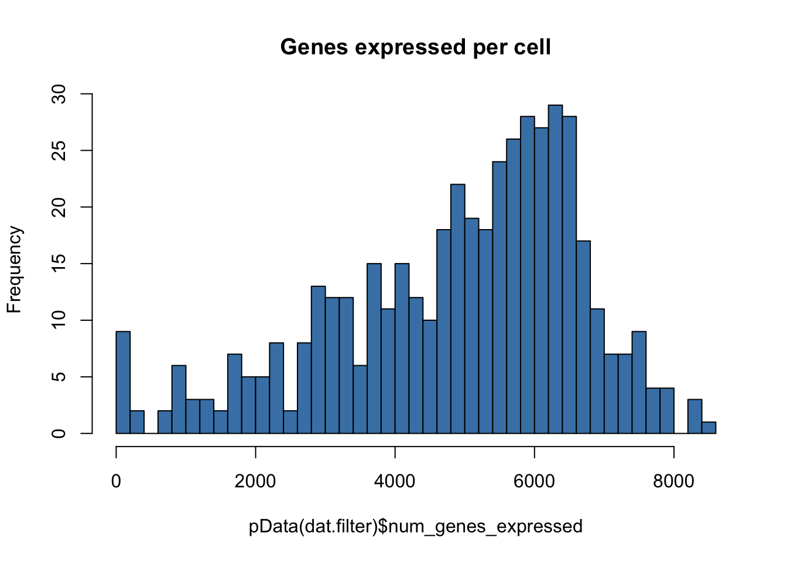
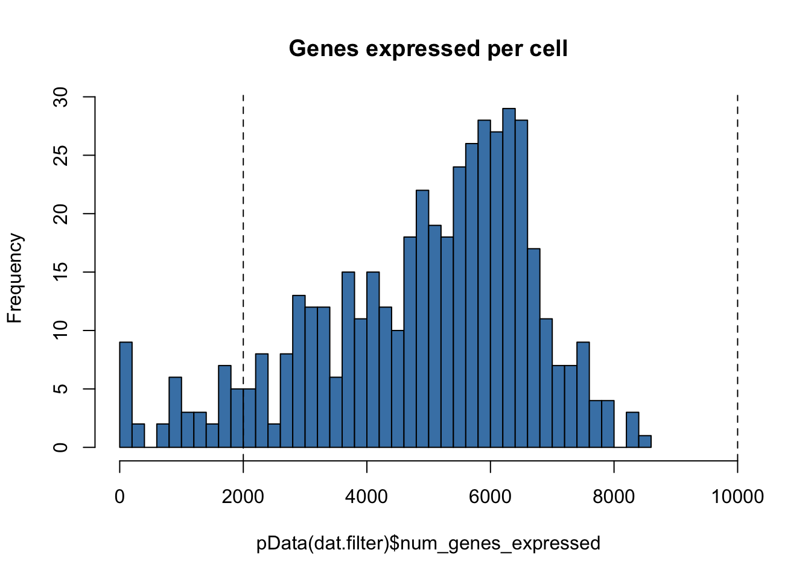
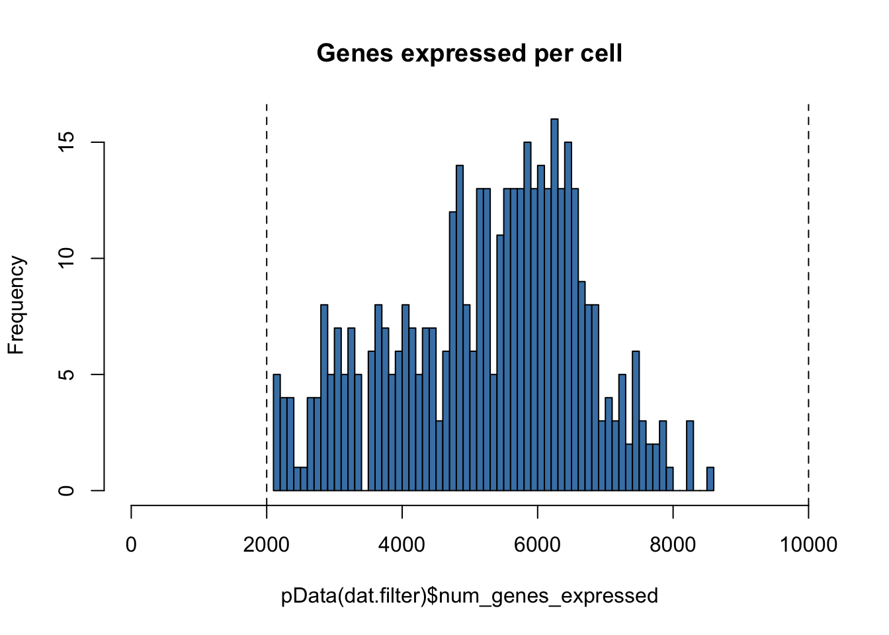
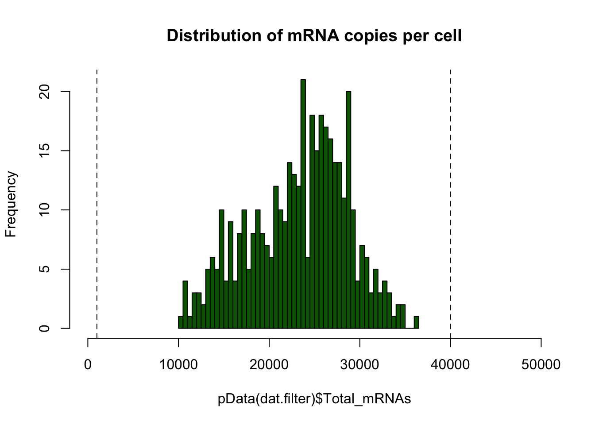

cds_creation-qc_filtering
Paul Hook
Last update: 2017-11-21
Code version: 2362b001a03415fc8138c8fd8298587a49866412
Setting important directories. Also loading important libraries and custom functions for analysis.
seq_dir <- "/Volumes/PAULHOOK/sc-da-parkinsons/data"
file_dir <- "/Volumes/PAULHOOK/sc-da-parkinsons/output"
Rdata_dir <- "/Volumes/PAULHOOK/sc-da-parkinsons/data"
Script_dir <- "/Volumes/PAULHOOK/sc-da-parkinsons/code"
source(file.path(Script_dir,'init.R'))Untarring big files
untar(file.path(seq_dir,"genes.fpkm_table.tar.gz"), exdir = seq_dir)
untar(file.path(seq_dir, "isoforms.fpkm_table.tar.gz"), exdir = seq_dir)
untar(file.path(seq_dir, "isoforms.count_table.tar.gz"), exdir = seq_dir)Loading FPKM datasets generated through cuffquant at the gene and isoform levels
#Gene FPKMs
fpkms<-read.delim(file.path(seq_dir,"genes.fpkm_table"),row.names=1) # reading in the fpkm table produced by cuffquant
gene_ann<-read.delim(file.path(seq_dir,"genes.attr_table")) # reading in the gene annotation table
rownames(gene_ann)<-gene_ann$tracking_id #renaming row names
#Isoform FPKMs
isoform_fpkms<-read.delim(file.path(seq_dir,"isoforms.fpkm_table")) # reading in isoform fpkm table produced from cuffquant
row.names(isoform_fpkms) <- isoform_fpkms$tracking_id # renaming rows
isoform_fpkms <- isoform_fpkms[,-1] # removing the first columnAnnotating the single-cell samples and genes
#Sample Annotation
sample_ann<-read.delim(file.path(seq_dir,"samples.table")) # reading in sample table
sample_ann$cell_id<-str_extract(as.character(sample_ann$sample_id),"TH_0[0-9]+_[A-H][0-9]+") #assigning cell IDs to the sample annotation table
rownames(sample_ann)<-sample_ann$cell_id # renaming rows the cell ID names
colnames(fpkms)<-sample_ann$cell_id # renaming columns in fpkms table to the cell ID names
master_cell_sheet<-read.delim(file.path(seq_dir,"CORRECTED_20160605_TH_master_sample_info_sheet.txt")) # reading in the master cell sheet that contains all pData about cells
master_cell_sheet<-master_cell_sheet[,1:28] # keeping columns 1:28 only
sample_info<-merge(sample_ann,master_cell_sheet,by.x=0,by.y='cell_id',sort=FALSE) # merging sample annotation with master_cell_sheet to get all information about cells in 1 place
rownames(sample_info)<-sample_info$cell_id # renaming rows
sample_info<-sample_info[,-1] # getting rid of "Row.names" column created by merging
gene_info<-read.delim(file.path(seq_dir,"gencode.vM8.transcripts.filtered.gene_annotation-eGFP.tab")) # loading in gencode vM8 gene annotatin for mouse genes
keyCols<-c("gene_status",'level','gene_type') # keeping only this information
tmp<-merge(gene_ann,gene_info[,keyCols],by=0,sort=FALSE) # merging gene ann and addition gencode gene information
rownames(tmp)<-tmp$Row.names # renaming rows
tmp<-tmp[,-1] # getting rid of "Row.names" column
gene_ann<-tmp # create final annotation table
lncRNA_geneIds<-gene_info$gene_id[gene_info$gene_type == "lincRNA"] # pulling out all long non-coding RNA genesCreating the CellDataSet (cds) and removing negative controls/empty wells
fd<-new("AnnotatedDataFrame",data=gene_ann) # officially making fData for genes
pd<-new("AnnotatedDataFrame",data=sample_info) # officially making pData for cells
# Creating our new cellDataSet for use in Monocle applications
dat.relative <- newCellDataSet(as(as.matrix(fpkms),"sparseMatrix"),
phenoData=pd,
featureData=fd)
# Checking the number of cells in the experiment
nrow(pData(dat.relative)) # 480 cells## [1] 480# Removing all the cells that are "neg_ctls" and "empty"
dat.relative <- dat.relative[,pData(dat.relative)$type=="sample"]
nrow(pData(dat.relative)) # 473 cells## [1] 473Using the Monocle Census algorithm to infer RNA copies per cell and creating a new cds
# Infer RNA copies per cell using relative2abs on isoform-level estimated t with the Census algorithm
fpkm_matrix_adj <- relative2abs(dat.relative, t_estimate=estimate_t(isoform_fpkms),cores=4)
# Create new dat object with absolute RNA copies per cell (estimated). Allows us to use faster and better characterized negbinom distribution for testing.
fd<-new("AnnotatedDataFrame",data=fData(dat.relative))
pd<-new("AnnotatedDataFrame",data=pData(dat.relative))
dat <- newCellDataSet(as(as.matrix(fpkm_matrix_adj),"sparseMatrix"),
phenoData = pd,
featureData = fd,
expressionFamily=negbinomial.size(),
lowerDetectionLimit=0.1)Filtering on all cells
Filtering based on number of genes detected in each cell and removing cells that fall outside of determined ranges
# Loading the data
dat.filter <- dat
# 'detect' genes and summarize by cell and by gene
dat.filter<-detectGenes(dat.filter,min_expr=0.1)
nrow(pData(dat.filter)) # number of cells 473## [1] 473# Plot num genes expressed across cells
hist(pData(dat.filter)$num_genes_expressed,breaks=50,col="steelblue",main="Genes expressed per cell")
# Setting the expressed genes threshold based on the plot above
low.num.genes.threshold <- 2000 # determined by looking at the graph
high.num.genes.threshold <- 10000 # determined by looking at the graph
hist(pData(dat.filter)$num_genes_expressed,
breaks=50,
col="steelblue",
main="Genes expressed per cell",
xlim = c(0,10000))
abline(v=low.num.genes.threshold,lty = "dashed")
abline(v=high.num.genes.threshold,lty="dashed")
nrow(pData(dat.filter)) # 473## [1] 473# Getting rid of the cells that are outside the thresholds
dat.filter <- dat.filter[,row.names(subset(pData(dat.filter),num_genes_expressed >= low.num.genes.threshold))]
dat.filter <- dat.filter[,row.names(subset(pData(dat.filter),num_genes_expressed <= high.num.genes.threshold))]
# Replotting to check distribution
hist(pData(dat.filter)$num_genes_expressed,
breaks=50,
col="steelblue",
main="Genes expressed per cell",
xlim = c(0,10000))
abline(v=low.num.genes.threshold,lty = "dashed")
abline(v=high.num.genes.threshold,lty="dashed")
# Number of cells left
nrow(pData(dat.filter)) #431## [1] 431Filtering based on the total mass of each cell and removing cells that fall outside of determined ranges
# Plotting the distribution of total cell mass
hist(pData(dat.filter)$total_mass,
breaks=50,
col="darkred",
main="Distribution of Total mass by cell")
# Setting the threshold based on the graph above
massThreshold<-1e+05 # Adjust this based on observation of mass distribution
massThreshold.2 <-13e+05
hist(pData(dat.filter)$total_mass,
breaks=50,
col="darkred",
main="Distribution of Total mass by cell")
abline(v=massThreshold,lty="dashed")
abline(v=massThreshold.2,lty="dashed")
# Filter out cells with 'low' number of fragments and 'high'
nrow(pData(dat.filter))## [1] 431dat.filter<-dat.filter[,row.names(subset(pData(dat.filter),total_mass >= massThreshold))]
dat.filter<-dat.filter[,row.names(subset(pData(dat.filter),total_mass <= massThreshold.2))]
nrow(pData(dat.filter)) # 410## [1] 410# Replot to look at distribution
hist(pData(dat.filter)$total_mass,
breaks=50,
col="darkred",
main="Distribution of Total mass by cell")
abline(v=massThreshold,lty="dashed")
abline(v=massThreshold.2,lty="dashed")
Filtering based on the total mRNAs in each cell and removing cells that fall outside of determined ranges
# Calculate total RNA mass per cell
pData(dat.filter)$Total_mRNAs <- colSums(exprs(dat.filter))
# Plot the distribution of total RNA mass per cell
hist(pData(dat.filter)$Total_mRNAs,breaks=50,
col="darkgreen",
main="Distribution of mRNA copies per cell",
xlim = c(0,5e+04))
# Set high and low thresholds determined from the distribution above
high.numGeneThreshold <- 4e+04
low.num.genes.threshold <- 1000
# Replot distribution with thresholds plotted
hist(pData(dat.filter)$Total_mRNAs,breaks=50,
col="darkgreen",
main="Distribution of mRNA copies per cell",
xlim = c(0,5e+04))
abline(v=high.numGeneThreshold,lty="dashed")
abline(v=low.num.genes.threshold,lty="dashed")
# Remove cells that fall under the high threshold
nrow(pData(dat.filter)) # 410## [1] 410dat.filter<-dat.filter[,pData(dat.filter)$Total_mRNAs <= high.numGeneThreshold]
nrow(pData(dat.filter)) # 410## [1] 410Now that only high quality cells are retained, the detectGenes function is used to recalculate the # of genes detected in each cell
# Recalculate # of genes
dat.filter<-detectGenes(dat.filter,min_expr=0.1)Before beginning Monocle analysis, the data needs to be checked to ensure that it follows a log-normal distribution. We find that our data follows a log-normal distribution. Script is pulled directly from Monocle manual.
# Log-transform each value in the expression matrix.
L <- log(exprs(dat.filter))
# Standardize each gene, so that they are all on the same scale, Then melt
# the data with plyr so we can plot it easily
melted_dens_df <- melt(t(scale(t(L))))
# Plot the distribution of the standardized gene expression values.
qplot(value, geom = "density", data = melted_dens_df) + stat_function(fun = dnorm,
size = 0.5, color = "red") + xlab("Standardized log(Transcripts)") + ylab("Density")## Warning: Removed 11850640 rows containing non-finite values (stat_density).
## Warning: Removed 11850640 rows containing non-finite values (stat_density).The data is subsetted according to age and region. These subsetted cds are saved as .rds objects to be used in subsequent analyses
nrow(pData(dat.filter)) # 410 cells## [1] 410saveRDS(object = dat.filter, file = file.path(Rdata_dir,"dat.filter.rds"))e15.dat.filter<-dat.filter[,pData(dat.filter)$age=="E15.5"]
nrow(pData(e15.dat.filter)) # 172 cells at e15 before filtering## [1] 172saveRDS(object = e15.dat.filter, file = file.path(Rdata_dir,"e15.dat.filter.rds"))e15.Mb.dat.filter <- dat.filter[,pData(dat.filter)$age=="E15.5" & pData(dat.filter)$region=="MB"]
nrow(pData(e15.Mb.dat.filter)) # 88 cells## [1] 88saveRDS(object = e15.Mb.dat.filter, file = file.path(Rdata_dir,"e15.Mb.dat.filter.rds"))e15.Fb.dat.filter <- dat.filter[,pData(dat.filter)$age=="E15.5" & pData(dat.filter)$region=="FB"]
nrow(pData(e15.Fb.dat.filter)) # 84 cells## [1] 84saveRDS(object = e15.Fb.dat.filter, file = file.path(Rdata_dir,"e15.Fb.dat.filter.rds"))P7.dat.filter<-dat.filter[,pData(dat.filter)$age=="P7"]
nrow(pData(P7.dat.filter)) # 238 cells at P7 before filtering## [1] 238saveRDS(object = P7.dat.filter, file = file.path(Rdata_dir,"P7.dat.filter.rds"))P7.Mb.dat.filter<-dat.filter[,pData(dat.filter)$age=="P7" & pData(dat.filter)$region=="MB"]
nrow(pData(P7.Mb.dat.filter)) # 80## [1] 80saveRDS(object = P7.Mb.dat.filter, file = file.path(Rdata_dir, "P7.Mb.dat.filter.rds"))P7.Fb.dat.filter<-dat.filter[,pData(dat.filter)$age=="P7" & pData(dat.filter)$region=="FB"]
nrow(pData(P7.Fb.dat.filter)) # 84## [1] 84saveRDS(object = P7.Fb.dat.filter, file = file.path(Rdata_dir, "P7.Fb.dat.filter.rds"))P7.Ob.dat.filter<-dat.filter[,pData(dat.filter)$age=="P7" & pData(dat.filter)$region=="OB"]
nrow(pData(P7.Ob.dat.filter)) # 74## [1] 74saveRDS(object = P7.Ob.dat.filter, file = file.path(Rdata_dir, "P7.Ob.dat.filter.rds"))Removing uncompressed large files before commit
file.remove(file.path(seq_dir, "isoforms.fpkm_table"))## [1] TRUEfile.remove(file.path(seq_dir, "genes.fpkm_table"))## [1] TRUEfile.remove(file.path(seq_dir, "isoforms.count_table"))## [1] TRUEsessionInfo()## R version 3.3.0 (2016-05-03)
## Platform: x86_64-apple-darwin13.4.0 (64-bit)
## Running under: OS X 10.11.6 (El Capitan)
##
## locale:
## [1] en_US.UTF-8/en_US.UTF-8/en_US.UTF-8/C/en_US.UTF-8/en_US.UTF-8
##
## attached base packages:
## [1] grid splines stats4 parallel stats graphics grDevices
## [8] utils datasets methods base
##
## other attached packages:
## [1] ggbiplot_0.55 scales_0.5.0 SC3_1.1.4
## [4] ROCR_1.0-7 jackstraw_1.1.1 lfa_1.2.2
## [7] tsne_0.1-3 gridExtra_2.3 slackr_1.4.2
## [10] vegan_2.4-4 permute_0.9-4 MASS_7.3-47
## [13] gplots_3.0.1 RColorBrewer_1.1-2 Hmisc_4.0-3
## [16] Formula_1.2-2 survival_2.41-3 lattice_0.20-35
## [19] Heatplus_2.18.0 Rtsne_0.13 pheatmap_1.0.8
## [22] tidyr_0.7.1 dplyr_0.7.4 plyr_1.8.4
## [25] heatmap.plus_1.3 stringr_1.2.0 marray_1.50.0
## [28] limma_3.28.21 reshape2_1.4.2 monocle_2.2.0
## [31] DDRTree_0.1.5 irlba_2.2.1 VGAM_1.0-2
## [34] ggplot2_2.2.1 Biobase_2.32.0 BiocGenerics_0.18.0
## [37] Matrix_1.2-11
##
## loaded via a namespace (and not attached):
## [1] RSelenium_1.7.1 colorspace_1.3-2 class_7.3-14
## [4] rprojroot_1.2 htmlTable_1.9 corpcor_1.6.9
## [7] base64enc_0.1-3 mvtnorm_1.0-6 codetools_0.2-15
## [10] doParallel_1.0.11 robustbase_0.92-7 knitr_1.17
## [13] jsonlite_1.5 cluster_2.0.6 semver_0.2.0
## [16] shiny_1.0.5 rrcov_1.4-3 httr_1.3.1
## [19] backports_1.1.1 assertthat_0.2.0 lazyeval_0.2.1
## [22] acepack_1.4.1 htmltools_0.3.6 tools_3.3.0
## [25] bindrcpp_0.2 igraph_1.1.2 gtable_0.2.0
## [28] glue_1.1.1 binman_0.1.0 doRNG_1.6.6
## [31] Rcpp_0.12.13 slam_0.1-37 gdata_2.18.0
## [34] nlme_3.1-131 iterators_1.0.8 mime_0.5
## [37] rngtools_1.2.4 gtools_3.5.0 WriteXLS_4.0.0
## [40] XML_3.98-1.9 DEoptimR_1.0-8 yaml_2.1.14
## [43] pkgmaker_0.22 rpart_4.1-11 fastICA_1.2-1
## [46] latticeExtra_0.6-28 stringi_1.1.5 pcaPP_1.9-72
## [49] foreach_1.4.3 e1071_1.6-8 checkmate_1.8.4
## [52] caTools_1.17.1 rlang_0.1.2 pkgconfig_2.0.1
## [55] matrixStats_0.52.2 bitops_1.0-6 qlcMatrix_0.9.5
## [58] evaluate_0.10.1 purrr_0.2.3 bindr_0.1
## [61] labeling_0.3 htmlwidgets_0.9 magrittr_1.5
## [64] R6_2.2.2 combinat_0.0-8 wdman_0.2.2
## [67] foreign_0.8-69 mgcv_1.8-22 nnet_7.3-12
## [70] tibble_1.3.4 KernSmooth_2.23-15 rmarkdown_1.6
## [73] data.table_1.10.4 HSMMSingleCell_0.106.2 digest_0.6.12
## [76] xtable_1.8-2 httpuv_1.3.5 openssl_0.9.7
## [79] munsell_0.4.3 registry_0.3This R Markdown site was created with workflowr